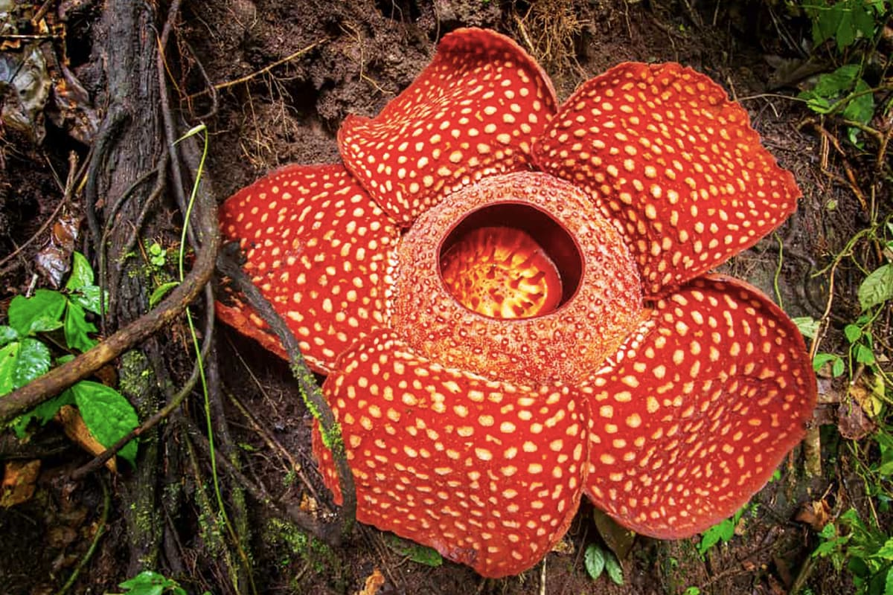
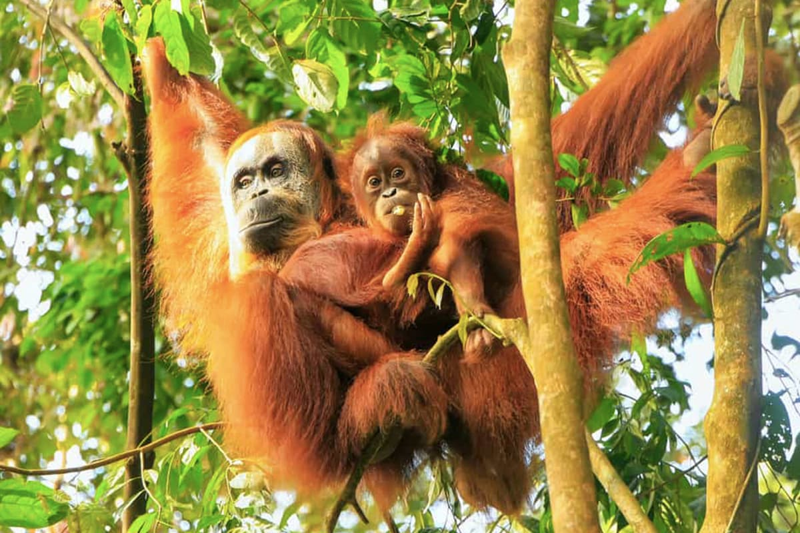
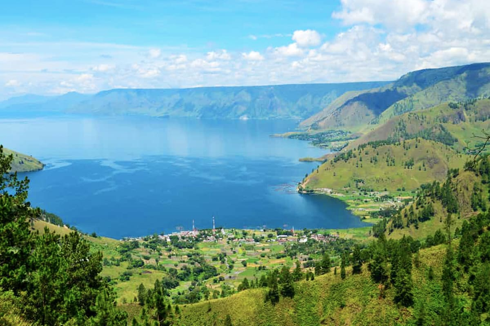

WHERE PEOPLE TO VISITS
LAND OF BEAUTIFUL THINGS

BUKIT LAWANG
Can you imagine discovering a meter-long flower on a nature walk? You might have seen it in science-fiction movies, but you can actually observe it up close in North Sumatra. Rafflesia Arnoldi is the world’s biggest flower and you can find it in Bukit Lawang
Leuser National Park
Did you know that North Sumatra is the only habitat where rhinos, elephants, and orangutans live together? They all live in Mount Leuser National Park, home to almost 750 exotic animals and approximately 10,000 plant species! It is one of the five places in the world where you can see the endangered orangutans. The ecotourism tours offered here give people a chance to discover the lush montane rainforest without disrespecting the wildlife and their habitat. By exploring the biodiversity of this park, you will be supporting the local communities and conservation organizations that are working to protect hundreds of flora and fauna species.


Lake Toba
An ecotourism trip to North Sumatra is incomplete without a visit to Lake Toba. A surface area of 1,145 km2 and a depth of around 450 meters make Lake Toba the world’s biggest crater lake. More than just a tourist destination, it offers an unforgettable cultural experience and a magical getaway with stunning greenery and mountain views.
Mount Sibayak
Well-known for its steamy sulfurous fumes and golden sunrise, Mount Sibayak, a North-Sumatran volcano, is an ideal site to trek responsibly. Thrill-seekers can begin their trekking adventure at two points: northwest of Berastagi or the base of the volcano. From there, you can explore the Air Terjun panorama and then trek to the exotic jungle at its base.